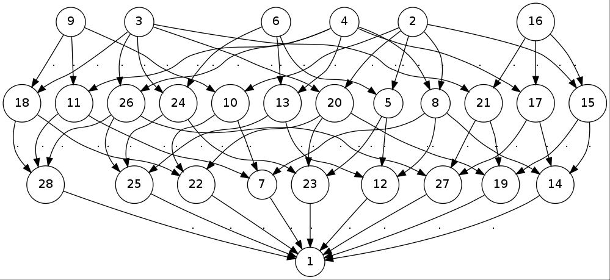

FR predefines a large collection of machines and groups. The groups are, whenever possible, defined as state closures of corresponding Mealy machines.
‣ FullBinaryGroup | ( global variable ) |
‣ FiniteDepthBinaryGroup( l ) | ( function ) |
‣ FinitaryBinaryGroup | ( global variable ) |
‣ BoundedBinaryGroup | ( global variable ) |
‣ PolynomialGrowthBinaryGroup | ( global variable ) |
‣ FiniteStateBinaryGroup | ( global variable ) |
These are the finitary, bounded, polynomial-growth, finite-state, or unrestricted groups acting on the binary tree. They are respectively shortcuts for FullSCGroup([1..2]), FullSCGroup([1..2],l), FullSCGroup([1..2],IsFinitaryFRSemigroup), FullSCGroup([1..2],IsBoundedFRSemigroup), FullSCGroup([1..2],IsPolynomialGrowthFRSemigroup), and FullSCGroup([1..2],IsFiniteStateFRSemigroup).
They may be used to draw random elements, or to test membership.
‣ BinaryKneadingGroup( angle/ks ) | ( function ) |
‣ BinaryKneadingMachine( angle/ks ) | ( function ) |
Returns: The [machine generating the] iterated monodromy group of a quadratic polynomial.
The first function constructs a Mealy machine whose state closure is the binary kneading group.
The second function constructs a new FR group G, which is the iterated monodromy group of a quadratic polynomial, either specified by its angle or by its kneading sequence(s).
If the argument is a (rational) angle, the attribute Correspondence(G) is a function returning, for any rational, the corresponding generator of G.
If there is one argument, which is a list or a string, it is treated as the kneading sequence of a periodic (superattracting) polynomial. The sequence is implicity assumed to end by '*'. The attribute Correspondence(G) is a list of the generators of G.
If there are two arguments, which are lists or strings, they are treated as the preperiod and period of the kneading sequence of a preperiodic polynomial. The last symbol of the arguments must differ. The attribute Correspondence(G) is a pair of lists of generators; Correspondence(G)[1] is the preperiod, and Correspondence(G)[2] is the period. The attribute KneadingSequence(G) returns the kneading sequence, as a pair of strings representing preperiod and period respectively.
As particular examples, BinaryKneadingMachine() is the adding machine; BinaryKneadingGroup() is the adding machine; and BinaryKneadingGroup("1") is BasilicaGroup (9.1-3).
gap> BinaryKneadingGroup()=AddingGroup(2); true gap> BinaryKneadingGroup(1/3)=BasilicaGroup; true gap> g := BinaryKneadingGroup([0,1],[0]); BinaryKneadingGroup("01","0") gap> ForAll(Correspondence(g)[1],IsFinitaryFRElement); true gap> ForAll(Correspondence(g)[2],IsFinitaryFRElement); false gap> ForAll(Correspondence(g)[2],IsBoundedFRElement); true
‣ BasilicaGroup | ( global variable ) |
The Basilica group. This is a shortcut for BinaryKneadingGroup("1"). It is the first-discovered amenable group that is not subexponentially amenable, see [BV05] and [G{\.Z}02].
gap> IsBoundedFRSemigroup(BasilicaGroup); true gap> pi := EpimorphismFromFreeGroup(BasilicaGroup); F := Source(pi);; [ x1, x2 ] -> [ a, b ] gap> sigma := GroupHomomorphismByImages(F,F,[F.1,F.2],[F.2,F.1^2]); [ x1, x2 ] -> [ x2, x1^2 ] gap> ForAll([0..10],i->IsOne(Comm(F.2,F.2^F.1)^(sigma^i*pi))); true
‣ FornaessSibonyGroup | ( global variable ) |
The Fornaess-Sibony group. This group was studied by Nekrashevych in [Nek08b]. It is the iterated monodromy group of the endomorphism of CP^2 defined by (z,p)↦((1-2z/p)^2,(1-2/p)^2).
gap> Size(NucleusOfFRSemigroup(FornaessSibonyGroup)); 288 gap> List(AdjacencyBasesWithOne(FornaessSibonyGroup),Length); [ 128, 128, 36, 36, 16, 16, 8 ] gap> p := AdjacencyPoset(FornaessSibonyGroup); <general mapping: <object> -> <object> > gap> Draw(HasseDiagramBinaryRelation(p));
This produces (in a new window) the following picture: 
‣ AddingGroup( n ) | ( function ) |
‣ AddingMachine( n ) | ( function ) |
‣ AddingElement( n ) | ( function ) |
The second function constructs the adding machine on the alphabet [1..n]. This machine has a trivial state 1, and a non-trivial state 2. It implements the operation "add 1 with carry" on sequences.
The third function constructs the Mealy element on the adding machine, with initial state 2.
The first function constructs the state-closed group generated by the adding machine on [1..n]. This group is isomorphic to the Integers.
gap> Display(AddingElement(3)); | 1 2 3 ---+-----+-----+-----+ a | a,1 a,2 a,3 b | a,2 a,3 b,1 ---+-----+-----+-----+ Initial state: b gap> ActivityPerm(FRElement(AddingMachine(3),2),2); (1,4,7,2,5,8,3,6,9) gap> G := AddingGroup(3); <self-similar group over [ 1 .. 3 ] with 1 generator> gap> Size(G); infinity gap> IsRecurrentFRSemigroup(G); true gap> IsLevelTransitive(G); true
‣ BinaryAddingGroup | ( global variable ) |
‣ BinaryAddingMachine | ( global variable ) |
‣ BinaryAddingElement | ( global variable ) |
These are respectively the same as AddingGroup(2), AddingMachine(2) and AddingElement(2).
‣ MixerGroup( A, B, f[, g] ) | ( function ) |
‣ MixerMachine( A, B, f[, g] ) | ( function ) |
Returns: A Mealy "mixer" machine/group.
The second function constructs a Mealy "mixer" machine m. This is a machine determined by a permutation group A, a finitely generated group B, and a matrix of homomorphisms from B to A. If A acts on [1..d], then each row of f contains at most d-1 homomorphisms. The optional last argument is an endomorphism of B. If absent, it is treated as the identity map on B.
The states of the machine are 1, followed by some elements a of A, followed by as many copies of some elements b of B as there are rows in f. The elements in B that are taken is the smallest sublist of B containing its generators and closed under g. The elements in A that are taken are the generators of A and all images of all taken elements of B under maps in f.
The transitions from a are towards 1 and the outputs are the permutations in A. The transitions from b are periodically given by f, completed by trivial elements, and finally by b^g; the output of b is trivial.
This construction is described in more detail in [B{\v S}01] and [BG{\v S}03].
Correspondence(m) is a list, with in first position the subset of the states that correspond to A, in second position the states that correspond to the first copy of B, etc.
The first function constructs the group generated by the mixer machine. For examples see GrigorchukGroups (9.1-9), NeumannGroup (9.1-20), GuptaSidkiGroups (9.1-18), and ZugadiSpinalGroup (9.1-22).
gap> grigorchukgroup := MixerGroup(Group((1,2)),Group((1,2)), [[IdentityMapping(Group((1,2)))],[IdentityMapping(Group((1,2)))],[]])); <self-similar group over [ 1 .. 2 ] with 4 generators> gap> IdGroup(Group(grigorchukgroup.1,grigorchukgroup.2)); [ 32, 18 ]
‣ SunicGroup( phi ) | ( function ) |
‣ SunicMachine( phi ) | ( function ) |
Returns: The Sunic machine associated with the polynomial phi.
A "Sunic machine" is a special kind of MixerMachine (9.1-7), in which the group A is a finite field GF(q), the group B is an extension A[x]/(ϕ), where ϕ is a monic polynomial; there is a map f:B-> A, given say by evaluation; and there is an endomorphism of g:B-> B given by multiplication by ϕ.
These groups were described in [{\v S}un07]. In particular, the case q=2 and ϕ=x^2+x+1 gives the original GrigorchukGroup (9.1-10).
gap> x := Indeterminate(GF(2));; gap> g := SunicGroup(x^2+x+1); SunicGroup(x^2+x+Z(2)^0) gap> g = GrigorchukGroup; true
‣ GrigorchukMachines( omega ) | ( function ) |
‣ GrigorchukGroups( omega ) | ( function ) |
Returns: One of the Grigorchuk groups.
This function constructs the Grigorchuk machine or group associated with the infinite sequence omega, which is assumed (pre)periodic; omega is either a periodic list (see PeriodicList (11.2-2)) or a plain list describing the period. Entries in the list are integers in [1..3].
These groups are MixerGroup (9.1-7)s. The most famous example is GrigorchukGroups([1,2,3]), which is also called GrigorchukGroup (9.1-10).
These groups are all 4-generated and infinite. They are described in [Gri84]. GrigorchukGroups([1]) is infinite dihedral. If omega contains at least 2 different digits, GrigorchukGroups([1]) has intermediate word growth. If omega contains all 3 digits, GrigorchukGroups([1]) is torsion.
The growth of GrigorchukGroups([1,2]) has been studied in [Ers04].
gap> G := GrigorchukGroups([1]); GrigorchukGroups([ 1 ]) gap> Index(G,DerivedSubgroup(G)); IsAbelian(DerivedSubgroup(G)); 4 true gap> H := GrigorchukGroups([1,2]); GrigorchukGroups([ 1, 2 ]) gap> Order(H.1*H.2); 8 gap> Order(H.1*H.4); infinity gap> IsSubgroup(H,G); true
‣ GrigorchukMachine | ( global variable ) |
‣ GrigorchukGroup | ( global variable ) |
This is Grigorchuk's first group, introduced in [Gri80]. It is a 4-generated infinite torsion group, and has intermediate word growth. It could have been defined as FRGroup("a=(1,2)","b=<a,c>","c=<a,d>","d=<,b>"), but is rather defined using Mealy elements.
The command EpimorphismFromFpGroup(GrigorchukGroup,n) constructs an approximating presentation for the Grigorchuk group, as proven in [Lys85]. Adding the relations Image(sigma^(n-2),(a*d)^2), Image(sigma^(n-1),(a*b)^2) and Image(sigma^(n-2),(a*c)^4) yields the quotient acting on 2^n points, as a finitely presented group.
‣ GrigorchukOverGroup | ( global variable ) |
This is a group strictly containing the Grigorchuk group (see GrigorchukGroup (9.1-10)). It also has intermediate growth (see [BG02], but it contains elements of infinite order. It could have been defined as FRGroup("a=(1,2)","b=<a,c>","c=<,d>","d=<,b>"), but is rather defined using Mealy elements.
gap> IsSubgroup(GrigorchukOverGroup,GrigorchukGroup); true gap> Order(Product(GeneratorsOfGroup(GrigorchukOverGroup))); infinity gap> GrigorchukGroup.2=GrigorchukSuperGroup.2*GrigorchukSuperGroup.3; true
The command EpimorphismFromFpGroup(GrigorchukOverGroup,n) will will construct an approximating presentation for the Grigorchuk overgroup, as proven in [Bar03a].
‣ GrigorchukTwistedTwin | ( global variable ) |
This is a group with same closure as the Grigorchuk group (see GrigorchukGroup (9.1-10)), but not isomorphic to it. It could have been defined as FRGroup("a=(1,2)","x=<y,a>","y=<a,z>","z=<,x>"), but is rather defined using Mealy elements.
gap> AbelianInvariants(GrigorchukTwistedTwin); [ 2, 2, 2, 2 ] gap> AbelianInvariants(GrigorchukGroup); [ 2, 2, 2 ] gap> PermGroup(GrigorchukGroup,8)=PermGroup(GrigorchukTwistedTwin,8); true
‣ BrunnerSidkiVieiraGroup | ( global variable ) |
‣ BrunnerSidkiVieiraMachine | ( global variable ) |
This machine is the sum of two adding machines, one in standard form and one conjugated by the element d described below. The group that it generates is described in [BSV99]. It could have been defined as FRGroup("tau=<,tau>(1,2)","mu=<,mu^-1>(1,2)"), but is rather defined using Mealy elements.
gap> V := FRGroup("d=<e,e>(1,2)","e=<d,d>"); <self-similar group over [ 1 .. 2 ] with 2 generators> gap> Elements(V); [ <2|identity ...>, <2|e>, <2|d>, <2|e*d> ] gap> AssignGeneratorVariables(BrunnerSidkiVieiraGroup); #I Assigned the global variables [ "tau", "mu", "" ] gap> List(V,x->tau^x)=[tau,mu,mu^-1,tau^-1]; true
‣ AleshinGroups( l ) | ( function ) |
‣ AleshinMachines( l ) | ( function ) |
Returns: The Aleshin machine with Length(l) states.
This function constructs the bireversible machines introduced by Aleshin in [Ale83]. The argument l is a list of permutations, either () or (1,2). The groups that they generate are contructed as AleshinGroups.
If l=[(1,2),(1,2),()], this is AleshinGroup (9.1-15). More generally, if l=[(1,2,(1,2),(),...,()] has odd length, this is a free group of rank Length(l), see [VV07] and [VV06].
If l=[(1,2),(1,2),...] has even length and contains an even number of ()'s, then this is also a free group of rank Length(l), see [SVV06].
If l=[(),(),(1,2)], this is BabyAleshinGroup (9.1-16). more generally, if l=[(),(),...] has even length and contains an even number of (1,2)'s, then this is the free product of Length(l) copies of the order-2 group.
‣ AleshinGroup | ( global variable ) |
‣ AleshinMachine | ( global variable ) |
This is the first example of non-abelian free group. It is the group generated by AleshinMachine([(1,2),(1,2),()]). It could have been defined as FRGroup("a=<b,c>(1,2)","b=<c,b>(1,2)","c=<a,a>"), but is rather defined using Mealy elements.
‣ BabyAleshinGroup | ( global variable ) |
‣ BabyAleshinMachine | ( global variable ) |
There are only two connected, transitive bireversible machines on a 2-letter alphabet, with 3 generators: AleshinMachine(3) and the baby Aleshin machine.
The group generated by this machine is abstractly the free product of three C_2's, see [Nek05, 1.10.3]. It could have been defined as FRGroup("a=<b,c>","b=<c,b>","c=<a,a>(1,2)"), but is rather defined here using Mealy elements.
gap> K := Kernel(GroupHomomorphismByImagesNC(BabyAleshinGroup,Group((1,2)), GeneratorsOfGroup(BabyAleshinGroup),[(1,2),(1,2),(1,2)])); <self-similar group over [ 1 .. 2 ] with 4 generators> gap> Index(BabyAleshinGroup,K); 2 gap> IsSubgroup(AleshinGroup,K); true
‣ SidkiFreeGroup | ( global variable ) |
This is a group suggested by Sidki as an example of a non-abelian state-closed free group. Nothing is known about that group: whether it is free as conjectured; whether generator a is state-closed, etc. It is defined as FRGroup("a=<a^2,a^t>","t=<,t>(1,2)")]]>.
‣ GuptaSidkiGroups( n ) | ( function ) |
‣ GeneralizedGuptaSidkiGroups( n ) | ( function ) |
‣ GuptaSidkiMachines( n ) | ( function ) |
Returns: The Gupta-Sidki group/machine on an n-letter alphabet.
This function constructs the machines introduced by Gupta and Sidki in [GS83]. They generate finitely generated infinite torsion groups: the exponent of every element divides some power of n. The special case n=3 is defined as GuptaSidkiGroup (9.1-19) and GuptaSidkiMachine (9.1-19).
For n>3, there are (at least) two natural ways to generalize the Gupta-Sidki construction: the original one involves the recursion "t=<a,a^-1,1,...,1,t>", while the second (called here `generalized') involves the recursion "t=<a,a^2,...,a^-1,t>". A finite L-presentation for the latter is implemented. It is not as computationally efficient as the L-presentation of the normal closure of t (a subgroup of index p), which is an ascending L-presented group. The inclusion of that subgroup may be recoverd via EmbeddingOfAscendingSubgroup(GuptaSidkiGroup).
‣ GuptaSidkiGroup | ( global variable ) |
‣ GuptaSidkiMachine | ( global variable ) |
This is an infinite, 2-generated, torsion 3-group. It could have been defined as FRGroup("a=(1,2,3)","t=<a,a^-1,t>"), but is rather defined using Mealy elements.
‣ NeumannGroup( P ) | ( function ) |
‣ NeumannMachine( P ) | ( function ) |
Returns: The Neumann group/machine on the permutation group P.
The first function constructs the Neumann group associated with the permutation group P. These groups were first considered in [Neu86]. In particular, NeumannGroup(PSL(3,2)) is a group of non-uniform exponential growth (see [Bar03b]), and NeumannGroup(Group((1,2,3))) is FabrykowskiGuptaGroup (9.1-21).
The second function constructs the Neumann machine associated to the permutation group P. It is a shortcut for MixerMachine(P,P,[[IdentityMapping(P)]]).
The attribute Correspondence(G) is set to a list of homomorphisms from P to the A and B copies of P.
‣ FabrykowskiGuptaGroup | ( global variable ) |
‣ FabrykowskiGuptaGroups( p ) | ( function ) |
This is an infinite, 2-generated group of intermediate word growth. It was studied in [FG85] and [FG91]. It could have been defined as FRGroup("a=(1,2,3)","t=<a,,t>"), but is rather defined using Mealy elements. It has a torsion-free subgroup of index 3 and is branched.
The natural generalization, replacing 3 by p, is constructed by the second form. It is a specific case of Neumann group (see NeumannGroup (9.1-20)), for which an ascending L-presentation is known.
‣ ZugadiSpinalGroup | ( global variable ) |
This is an infinite, 2-generated group, which was studied in [BG02]. It has a torsion-free subgroup of index 3, and is virtually branched but not branched. It could have been defined as FRGroup("a=(1,2,3)","t=<a,a,t>"), but is rather defined using Mealy elements.
Amaia Zugadi computed its Hausdorff dimension to be 1/2.
‣ GammaPQMachine( p, q ) | ( function ) |
‣ GammaPQGroup( p, q ) | ( function ) |
Returns: The quaternion-based machine / SC group.
The first function constructs a bireversible (see IsBireversible (5.2-7)) Mealy machine based on quaternions, see [BM00a] and [BM00b]. This machine has p+1 states indexed by integer quaternions of norm p, and an alphabet of size q+1 indexed by quaternions of norm q. These quaternions are congruent to 1mod 2 or imod 2 depending on whether the odd prime p or q is 1 or 3mod 4.
The structure of the machine is such that there is a transition from (q,a) to (q',a') precisely when qa'=± q'a. In particular, the relations of the StructuralGroup (3.5-1) hold up to a sign, when the alphabet/state letters are substituted for the appropriate quaternions.
The quaternions themselves can be recovered through Correspondence (3.5-12), which is a list with in first position the quaternions of norm p and in second those of norm q.
The second function constructs the quaternion lattice that is the StructuralGroup (3.5-1) of that machine. It has actions on two trees, given by VerticalAction (9.5-2) and HorizontalAction (9.5-2); the ranges of these actions are groups generated by automata, which are infinitely-transitive (see IsInfinitelyTransitive (7.2-13)) and free by [GM05, Proposition 3.3]; see also [Ale83].
‣ RattaggiGroup | ( global variable ) |
This record contains interesting examples of VH groups, that were studied by Rattaggi in his PhD thesis [Rat04]. His Example 2.x appears as RattaggiGroup.2_x.
The following summary of the examples' properties are copied from Rattaggi's thesis. RF means "residually finite"; JI means "just infinite"; VS means "virtually simple".
| Example | P_h | P_v | Irred? | Linear? | RF? | JI? | VS? |
| 2.2 | 2tr | 2tr | Y | N | N? | Y | Y? |
| 2.15 | |||||||
| 2.18 | |||||||
| 2.21 | |||||||
| 2.26 | 2tr | q-prim | Y | N | N | N | N |
| 2.30 | 2tr | 2tr | Y | N | N | Y | Y? |
| 2.36 | |||||||
| 2.39 | |||||||
| 2.43 | 2tr | 2tr | Y | N | N | Y | Y |
| 2.46 | |||||||
| 2.48 | |||||||
| 2.50 | |||||||
| 2.52 | tr | 2tr | Y | N | N | N | N |
| 2.56 | |||||||
| 2.58 | 2tr | prim | Y | N | N? | N | N |
| 2.70 | |||||||
| 3.26 | 2tr | 2tr | Y | Y | Y | Y | N |
| 3.28 | |||||||
| 3.31 | |||||||
| 3.33 | |||||||
| 3.36 | |||||||
| 3.38 | |||||||
| 3.40 | |||||||
| 3.44 | |||||||
| 3.46 | |||||||
| 3.72 |
‣ HanoiGroup( n ) | ( function ) |
Returns: The Hanoi group on an n pegs.
This function constructs the Hanoi group on n pegs. Generators of the group correspond to moving a peg, and tree vertices correspond to peg configurations. This group is studied in [G{\v S}06].
‣ DahmaniGroup | ( global variable ) |
This is an example of a non-contracting weakly branched group. It was first studied in [Dah05]. It could have been defined as FRGroup("a=<c,a>(1,2)","b=<b,a>(1,2)","c=<b,c>"), but is rather defined using Mealy elements.
It has relators abc, [a^2c,[a,c]], [cab,a^-1c^-1ab] and [ac^2,c^-1b^-1c^2] among others.
It admits an endomorphism on its derived subgroup. Indeed FRElement(1,Comm(a,b))=Comm(c^-1,b/a), FRElement(1,Comm(a,c))=Comm(a/b,c), FRElement(1,Comm(b,c))=Comm(c,(a/b)^c).
‣ MamaghaniGroup | ( global variable ) |
This group was studied in [Mam03]. It is fractal, but not contracting. It could have been defined as FRGroup("a=<,b>(1,2)","b=<a,c>","c=<a,a^-1>(1,2)")]]>, but is rather defined using Mealy elements. It partially admits branching on its subgroup Subgroup(G,[a^2,(a^2)^b,(a^2)^c]), and, setting x=Comm(a^2,b), on Subgroup(G,[x,x^a,x^b,x^(b*a),x^(b/a)]). One has FRElement(1,x)=(x^-1)^b/x.
‣ WeierstrassGroup | ( global variable ) |
This is the iterated monodromy group associated with the Weierstrass ℘-function.
Some relators in the group: (atbt)^4, ((atbt)(bt)^4n)^4, ((atbt)^2(bt)^4n)^2.
Set x=[a,t], y=[b,t], z=[c,t], and w=[x,y]. Then G'=⟨ x,y,z⟩ of index 8, and γ_3=⟨[{x,y,z},{a,b,c}]⟩ of index 32, and γ_4=G''=⟨ w⟩^G, of index 256, and G''>(G'')^4 since [[t^a,t],[t^b,t]]=(w,1,1,1).
The Schreier graph is obtained in the complex plane as the image of a 2^n× 2^n lattice in the torus, via Weierstrass's ℘-function.
The element at has infinite order.
[c,t,b][b,t,c][a,t,c][c,t,a] has order 2, and belongs to G''; so there exist elements of arbitrary large finite order in the group.
‣ StrichartzGroup | ( global variable ) |
This group generates the graph of the Strichartz hexacarpet.
The Strichartz hexacarpet is the dual graph to the infinitely iterated barycentric subdivision of the triangle. The Strichartz group acts on {1,dots,6}^n for all n, and the Schreier graph with 6^n vertices is the nth Strichartz graph.
Conjecturally, that graph's radius is 1/18(2^(n+1)(13+3n)+(-1)^n-9) and its diameter is 1/9(2^(n-1)(31+12n)+2(-1)^(n-1)-18).
See [BKN+12] for details.
‣ FRAffineGroup( d, R, u[, transversal] ) | ( operation ) |
Returns: The d-dimensional affine group over R.
This function constructs a new FR group G, which is finite-index subgroup of the d-dimensional affine group over R_u, the local ring over R in which all non-multiples of u are invertible. Since no generators of G are known, G is in fact returned as a full SC group; only its attribute Correspondence(G), which is a homomorphism from GL_d+1(R_u) to G, is relevant.
The affine group can also be described as a subgroup of GL_d+1(R_u), consisting of those matrices M with M_i,d+1=0 and M_d+1,d+1=1. The finite-index subgroup is defined by the conditions u|M_i,j for all j<i.
The only valid arguments are R=Integers and R=PolynomialRing(S) for a finite ring S. The alphabet of the affine group is R/RuR; an explicit transversal of RuR be specified as last argument.
The following examples construct the "Baumslag-Solitar group" Z[frac12]⋊_2 Z first introduced in [BS62], the "lamplighter group" ( Z/2)≀ Z, and a 2-dimensional affine group. Note that the lamplighter group may also be defined via CayleyGroup (9.1-31).
gap> A := FRAffineGroup(1,Integers,3); <self-similar group over [ 1 .. 3 ]> gap> f := Correspondence(A); MappingByFunction( ( Integers^ [ 2, 2 ] ), <self-similar group over [ 1 .. 3 ]>, function( mat ) ... end ) gap> BaumslagSolitar := Group([[2,0],[0,1]]^f,[[1,0],[1,1]]^f); <self-similar group over [ 1 .. 3 ] with 2 generators> gap> BaumslagSolitar.2^BaumslagSolitar.1=BaumslagSolitar.2^2; true gap> R := PolynomialRing(GF(2));; gap> A := FRAffineGroup(1,R,R.1);; gap> f := Correspondence(A);; gap> Lamplighter := Group(([[1+R.1,0],[0,1]]*One(R))^f,([[1,0],[1,1]]*One(R))^f); <self-similar group over [ 1 .. 2 ] with 2 generators> gap> Lamplighter = CayleyGroup(Group((1,2))); true gap> StructureDescription(Group(Lamplighter.2,Lamplighter.2^Lamplighter.1)); "C2 x C2" gap> ForAll([1..10],i->IsOne(Comm(Lamplighter.2,Lamplighter.2^(Lamplighter.1^i)))); true gap> A := FRAffineGroup(2,Integers,2);; gap> f := Correspondence(A);; gap> a := [[1,4,0],[2,3,0],[1,0,1]]; [ [ 1, 4, 0 ], [ 2, 3, 0 ], [ 1, 0, 1 ] ] gap> b := [[1,2,0],[4,3,0],[0,1,1]]; [ [ 1, 2, 0 ], [ 4, 3, 0 ], [ 0, 1, 1 ] ] gap> Display(b^f); | 1 2 ----+------+------+ a | b,1 c,2 b | d,2 e,1 c | a,2 f,1 ... bh | cb,1 be,2 ca | bd,1 bf,2 cb | ae,2 bh,1 ----+------+------+ Initial state: a gap> a^f*b^f=(a*b)^f; true
‣ CayleyGroup( G ) | ( function ) |
‣ CayleyMachine( G ) | ( function ) |
‣ LamplighterGroup( IsFRGroup, G ) | ( method ) |
Returns: The Cayley machine/group of the group G.
The Cayley machine of a group G is a machine with alphabet and stateset equal to G, and with output and transition functions given by multiplication in the group, in the order state*letter.
The second function constructs a new FR group CG, which acts on [1..Size(G)]. Its generators are in bijection with the elements of G, and have as output the corresponding permutation of G induced by right multiplication, and as transitions all elements of G; see CayleyMachine. This construction was introduced in [SS05].
If G is an abelian group, then CG is the wreath product G≀ Z; it is created by the constructor LamplighterGroup(IsFRGroup,G).
The attribute Correspondence(CG) is a list. Its first entry is a homomorphism from G into CG. Its second entry is the generator of CG that has trivial output. CG is generated Correspondence(CG)[2] and the image of Correspondence(CG)[1].
In the example below, recall the definition of Lamplighter in the example of FRAffineGroup (9.1-30).
gap> L := CayleyGroup(Group((1,2))); CayleyGroup(Group( [ (1,2) ] )) gap> L=LamplighterGroup(IsFRGroup,CyclicGroup(2)); true gap> (1,2)^Correspondence(L)[1]; <Mealy element on alphabet [ 1, 2 ] with 2 states, initial state 1> gap> IsFinitaryFRElement(last); Display(last2); true | 1 2 ---+-----+-----+ a | b,2 b,1 b | b,1 b,2 ---+-----+-----+ Initial state: a
‣ I2Machine | ( global variable ) |
‣ I2Monoid | ( global variable ) |
The Mealy machine I_2, and the monoid that it generates. This is the smallest Mealy machine generating a monoid of intermediate word growth; see [BRS06].
For sample calculations in this monoid see SCSemigroup (7.1-3).
‣ I4Machine | ( global variable ) |
‣ I4Monoid | ( global variable ) |
The Mealy machine generating I_4, and the monoid that it generates. This is a very small Mealy machine generating a monoid of intermediate word growth; see [BR08].
For sample calculations in this monoid see SCMonoid (7.1-3).
‣ PSZAlgebra( k[, m] ) | ( function ) |
This function creates an associative algebra A, over the field k of positive characteristic, generated by m derivations d0,...,d(m-1),v. If the argument m is absent, it is taken to be 2.
This algebra has polynomial growth, and is not nilpotent. Petrogradsky showed in [Pet06] that the Lie subalgebra of PSZAlgebra(GF(2)) generated by v,[u,v] is nil; this result was generalized by Shestakov and Zelmanov in [SZ08] to arbitrary k and m=2.
This ring is Z^m-graded; the attribute Grading is set. It is graded nil [PSZ].
gap> a := PSZAlgebra(2); PSZAlgebra(GF(2)) gap> Nillity(a.1); Nillity(a.2); 2 4 gap> IsNilElement(LieBracket(a.1,a.2)); true gap> DecompositionOfFRElement(LieBracket(a.1,a.2))=DiagonalMat([a.2,a.2]); true
‣ GrigorchukThinnedAlgebra( k ) | ( function ) |
This function creates the associative envelope A, over the field k, of Grigorchuk's group GrigorchukGroup (9.1-10).
k may be a field or an prime representing the prime field GF(k). In characteristic 2, this ring is graded, and the attribute Grading is set.
For more information on the structure of this thinned algebra, see [Bar06].
gap> R := GrigorchukThinnedAlgebra(2); <self-similar algebra-with-one on alphabet GF(2)^2 with 4 generators, of dimension infinity> gap> GrigorchukGroup.1^Embedding(GrigorchukGroup,R)=R.1; true gap> Nillity(R.2+R.1); 16 gap> x := 1+R.1+R.2+(R.1-1)*(R.4-1); # x has infinite order <Linear element on alphabet GF(2)^2 with 5-dimensional stateset> gap> Inverse(x); <Linear element on alphabet GF(2)^2 with 9-dimensional stateset> gap> Grading(R).hom_components(4); <vector space of dimension 6 over GF(2)> gap> Random(last); <Linear element on alphabet GF(2)^2 with 6-dimensional stateset> gap> Nillity(last); 4
‣ GuptaSidkiThinnedAlgebra( k ) | ( function ) |
This function creates the associative envelope A, over the field k, of Gupta-Sidki's group GuptaSidkiGroup (9.1-19).
k may be a field or an prime representing the prime field GF(k).
For more information on the structure of this thinned algebra, see [Sid97].
gap> R := GuptaSidkiThinnedAlgebra(3); <self-similar algebra-with-one on alphabet GF(3)^3 with 4 generators> gap> Order(R.1); 3 gap> R.1*R.3; <Identity linear element on alphabet GF(3)^3> gap> IsOne(R.2*R.4); true gap> x := 1+R.2*(1+R.1+R.3); # a non-invertible element <Linear element on alphabet GF(3)^3 with 5-dimensional stateset> gap> Inverse(x); #I InverseOp: extending to depth 3 #I InverseOp: extending to depth 4 #I InverseOp: extending to depth 5 #I InverseOp: extending to depth 6 Error, user interrupt in
‣ GrigorchukLieAlgebra( k ) | ( function ) |
‣ GuptaSidkiLieAlgebra( k ) | ( function ) |
Two more examples of self-similar Lie algebras; see [Bar10].
‣ SidkiFreeAlgebra( k ) | ( function ) |
This is an example of a free 2-generated associative ring over the Z, defined by self-similar matrices. It is due to S. Sidki. The argument is a field on which to construct the algebra. The recursion is s=[[1,0],[0,2*s]] and t=[[0,2*s],[0,2*t]].
gap> R := SidkiFreeAlgebra(Rationals); <self-similar algebra-with-one on alphabet Rationals^2 with 2 generators> gap> V := VectorSpace(Rationals,[R.1,R.2]); <vector space over Rationals, with 2 generators> gap> P := [V];; for i in [1..3] do Add(P,ProductSpace(P[i],V)); od; gap> List(P,Dimension); [ 2, 4, 8, 16 ] gap> R := SidkiFreeAlgebra(GF(3)); <self-similar algebra-with-one on alphabet GF(3)^2 with 2 generators> gap> V := VectorSpace(GF(3),[R.1,R.2]);; gap> P := [V];; for i in [1..3] do Add(P,ProductSpace(P[i],V)); od; gap> List(P,Dimension); [ 2, 4, 7, 12 ]
‣ SidkiMonomialAlgebra( k ) | ( function ) |
This is an example of a self-similar algebra that does not come from a semigroup; it is due to S. Sidki. The argument is a field on which to construct the algebra. The recursion is s=[[0,0],[1,0]] and t=[[0,t],[0,s]]. Sidki shows that this algebra, like the Grigorchuk thinned algebra in characteristic 2 (see GrigorchukThinnedAlgebra (9.3-2)), admits a monomial presentation, and in particular is a graded ring.
gap> R := SidkiMonomialAlgebra(Rationals); <self-similar algebra-with-one on alphabet Rationals^2 with 2 generators> gap> m := FreeSemigroup("s","t");; gap> lambda := MagmaEndomorphismByImagesNC(m,[m.2,m.1*m.2]);; gap> u := [m.1^2];; for i in [1..3] do u[2*i] := m.2*u[2*i-1]^lambda; u[2*i+1] := u[2*i]^lambda; od; gap> u; # first relations [ s^2, t^3, s*t*s*t*s*t, t^2*s*t^2*s*t^2*s*t, s*t*s*t^2*s*t*s*t^2*s*t*s*t^2*s*t, t^2*s*t^2*s*t*s*t^2*s*t^2*s*t*s*t^2*s*t^2*s*t*s*t^2*s*t, s*t*s*t^2*s*t*s*t^2*s*t^2*s*t*s*t^2*s*t*s*t^2*s*t^2*s*t*s*t^2*s*t*s*t^2*s*t^2*s*t*s*t^2*s*t ] gap> pi := MagmaHomomorphismByImagesNC(m,R,[R.1,R.2]);; gap> Image(pi,u); [ <Zero linear element on alphabet Rationals^2> ] gap> # growth given by fibonacci numbers gap> List([0..6],Grading(R).hom_components); [ <vector space over Rationals, with 1 generators>, <vector space over Rationals, with 2 generators>, <vector space of dimension 3 over Rationals>, <vector space of dimension 4 over Rationals>, <vector space of dimension 5 over Rationals>, <vector space of dimension 7 over Rationals>, <vector space of dimension 8 over Rationals> ]
In his paper [Bac08], Roland Bacher exhibits striking formulas for determinants of matrices obtained from binomial coefficients.
The general construction is as follows: let P be an infinite matrix, and let P(n) be its upper n× n corner. To evaluate det P(n), decompose P=LDR where L,D,R are respectively lower triangular, diagonal, and upper triangular, with 1's on the diagonals of L and R. Then that determinant is the product of the first n entries of D.
Bacher considers some natural examples of matrices arising from binomial coefficients, and notes that the matrix P is the limit of a convergent vector element (see IsConvergent (6.1-9)). He also notes that the decomposition P=LDR may be achieved within vector elements.
As a first example, consider the n× n matrix P(n) with coefficients P_s,t=s+t choose smod 2. Here and below, indices start at 0. Let also ds(n) denote the digit-sum of the integer n. Then
\det(P(n))=\cases{ (-1)^{n/2} & if $n$ is even,\cr (-1)^{(n-1)/2+ds((n-1)/2)} & if $n$ is odd.}
For the proof, note that P is a convergent infinite matrix; it may be presented as a self-similar linear element by FRAlgebra("P=[[P,P],[P,0]]"). It then suffices to construct an LR decomposition of P within FR vector elements, following Bacher:
gap> AssignGeneratorVariables(FRAlgebra(Rationals, "P=[[P,P],[P,0]]","L=[[L,0],[L,L]]","D=[[D,0],[0,-D]]")); gap> L*D*TransposedFRElement(L)=P; true
and to analyse the elements of the diagonal matrix D.
For a more complicated example, let v_2 denote 2-valuation of a rational, and construct the n× n matrix V(n) with coefficients V_s,t=i^v_2(s+t choose s). Then
\det(V(n))=\det(P(n))\prod_{k=1}^{n-1}(1-f(k)i),
where f(k) is the regular paper-folding sequence defined by f(2^n)=1 and f(2^n+a)=-f(2^n-a) for 1le a<2^n.
This is again proved by noticing that V is a corner in a self-similar element, namely
gap> AssignGeneratorVariables(FRAlgebra(GaussianRationals, "V1=[[V1,V2],[V2,E(4)*V1]]", "V2=[[V1,-E(4)*V1+(1+E(4))*V2],[-E(4)*V1+(1+E(4))*V2,-V1]]")); gap> Activity(V1,3)= List([0..7],s->List([0..7],t->E(4)^ValuationInt(Binomial(s+t,s),2))); true
The LR decomposition of V=V1 can be checked as follows:
gap> AssignGeneratorVariables(FRAlgebra(GaussianRationals, "L1=[[L1,0],[L3,L4]]", "L2=[[0,-E(4)*L2],[-L1+L3,-E(4)*L2-E(4)*L4]]:0", "L3=[[L1,L2],[-E(4)*L1+(1+E(4))*L3,L2+(1+E(4))*L4]]", "L4=[[L1,0],[(1-E(4))*L1+E(4)*L3,L4]]", "D1=[[D1,0],[0,D2]]", "D2=[[D3,0],[0,2*D1-D2+2*D3]]:-1+E(4)", "D3=[[D3,0],[0,-D2]]:-1+E(4)")); gap> L1*D1*TransposedFRElement(L1)=V1; true
The LR decomposition can also, in favourable situations, be discovered by FR through the command LDUDecompositionFRElement (6.1-11). This approach will be followed below.
For the next example, consider "Beeblebrox reduction" β(4k±1)=±1,β(2k)=0, and construct the n× n matrix Z(n) (named after Zaphod Beeblebrox) with coefficients Z_s,t=β(s+t choose s). Then
\det(Z(n))=\prod_{k=1}^{n-1}g(k),
where g(∑ a_i2^i)=(-1)^a_03^#{i:a_i=a_i+1=1}-#{i:a_i≠ a_i+1=1} with all a_i∈{0,1}.
This is again proved by noticing that Z is a corner in a self-similar element, namely
gap> beta := n->Jacobi(-1,n)*(n mod 2);; gap> Zaphod := GuessVectorElement(List([0..7],i->List([0..7],j->beta(Binomial(i+j,j))))); <Linear element on alphabet Rationals^2 with 3-dimensional stateset> gap> Display(Zaphod); Rationals | 1 | 2 | -----------+----------+----------+ 1 | 1 0 0 | 0 1 0 | | 1 0 0 | 0 1 0 | | 1 0 0 | 0 -1 0 | -----------+----------+----------+ 2 | 0 0 1 | 0 0 0 | | 0 0 -1 | 0 0 0 | | 0 0 1 | 0 0 0 | -----------+----------+----------+ Output: 1 1 1 Initial state: 1 0 0 gap> LDUDecompositionFRElement(guessZ); [ <Linear element on alphabet Rationals^2 with 4-dimensional stateset>, <Linear element on alphabet Rationals^2 with 2-dimensional stateset>, <Linear element on alphabet Rationals^2 with 4-dimensional stateset> ] gap> Display(last[2]); Rationals | 1 | 2 | -----------+---------+---------+ 1 | 1 0 | 0 0 | | 3 0 | 0 0 | -----------+---------+---------+ 2 | 0 0 | 0 1 | | 0 0 | 0 1/3 | -----------+---------+---------+ Output: 1 -1 Initial state: 1 0
and now the recursion read on this diagonal self-similar matrix gives immediately Bacher's recursion for det(Z(n)).
Bacher notes that the group generated by a=L_1,b=L_2/2,c=L_3,d=L_4 in the last example may be of interest. A quick check produces the following relations (slightly rewritten):
gap> AssignGeneratorVariables(FRAlgebra(Rationals, "a=[[a,0],[c,d]]","b=[[-1/3*a,2*b],[1/3*c,d]]", "c=[[a,2*b],[c,d]]","d=[[a,0],[1/3*c,d]]")); gap> g := Group(List([a,b,c,d], x->Activity(x,3))); <matrix group with 4 generators> gap> FindShortGroupRelations(g,10); [ b*d^-1*c*a^-1, c*a^-1*c*a^-1, c*a*d^-1*a^-1*d^2*a^-1*b^-1, c*a*d^-1*c^-1*b*d*a^-1*b^-1, c*d*a^-2*d*a*d^-1*b^-1, c*a^2*d^-1*a^-2*d*a*d*a^-2*b^-1, d^2*a*d^-2*b^-1*c*a*d*a^-3, c*d*a*d^-2*a^-1*d*a*d*a^-2*b^-1 ]
Consider next the "triangular Beeblebrox matrix" with entries L_s,t=β(s choose t). The recurrence is now given by
gap> A := FRAlgebra(Rationals, "L1=[[L1,0],[L2,L3]]", "L2=[[L1,0],[L2,-L3]]", "L3=[[L1,0],[-L2,L3]]"); <self-similar algebra on alphabet Rationals^2 with 3 generators>
and it is striking that A is a graded algebra, with L_1,L_2,L_3 homogeneous of degree 1, and each homogeneous component is 3-dimensional; all of L_1,L_2,L_3 are invertible (with inverses have degree -1), and generate a group that admits a faithful 3× 3 linear representation. As a final example, Bacher considers the "Jacobi character" χ(8ℤ±1)=1,χ(8ℤ±3)=-1,χ(2ℤ)=0, and the associated matrix J_s,t=χ(s+t choose s). He gives an easily-computed, but complicated formula for det(J(n)). We can recover this formula, as before, by "guessing" an LR decomposition for J, which is self-similar and convergent:
gap> chi := function(x) if x mod 8 in [1,7] then return 1; elif x mod 8 in [3,5] then return -1; else return 0; fi; end;; gap> m := List([0..63],i->List([0..63],j->chi(Binomial(i+j,j))));; gap> J := GuessVectorElement(m,2); <Linear element on alphabet Rationals^2 with 9-dimensional stateset> gap> LDUDecompositionFRElement(J); [ <Linear element on alphabet Rationals^2 with 20-dimensional stateset>, <Linear element on alphabet Rationals^2 with 4-dimensional stateset>, <Linear element on alphabet Rationals^2 with 20-dimensional stateset> ] gap> time; 26869 gap> Display(last2[2]); Rationals | 1 | 2 | -----------+-----------------+-----------------+ 1 | 1 0 0 0 | 0 0 0 0 | | 0 0 1 0 | 0 0 0 0 | | 3 0 0 0 | 0 0 0 0 | | 0 0 3 0 | 0 0 0 0 | -----------+-----------------+-----------------+ 2 | 0 0 0 0 | 0 1 0 0 | | 0 0 0 0 | 0 0 0 1 | | 0 0 0 0 | 0 1/3 0 0 | | 0 0 0 0 | 0 0 0 1/3 | -----------+-----------------+-----------------+ Output: 1 -1 3 -1/3 Initial state: 1 0 0 0
FR understands a special kind of finitely presented groups, called VH groups. These are groups with two distinguished sets of generators, V and H, and such that for every choice of v∈ V,h∈ H there are unique v'∈ V,h'∈ H such that vh=h'v' and conversely. In other words, these are finitely presented groups whose Cayley complex is a product of two trees.
These groups are of particular interest thanks to the work of Burger and Mozes, see [BM00a] and [BM00b], who constructed the first examples of finitely presented simple groups in this manner.
VH groups are connected to groups generated by automata as follows. Given a VH group, consider the automaton with stateset V, acting on alphabet H; its output and transition are determined by Φ(v,h)=(h',v') where v',h' are determined by the equation vh=h'v'.
Conversely, any bireversible automaton gives rise to a VH group by the inverse construction.
FR contains commands that automatize the verification that a VH group is non-residually finite, or virtually simple. Inspiration came from Diego Rattaggi's PhD thesis [Rat04].
‣ VHStructure( g ) | ( operation ) |
‣ IsVHGroup( g ) | ( filter ) |
Returns: A VH-structure for the group g.
A VH-structure on a group g is a partition of the generators in two sets V,H such that every relator of g is of the form vhv'h', and such that for all v∈ V,h∈ H there exist unique v'∈ V,h'∈ H such that vhv'h'=1.
The VH structure is stored as a record with fields v,h containing lists of generators, and integer matrices transitions,output such that transitions[v][h']=v' and output[v][h']=h.
The filter recognizes groups with a VH structure.
‣ VerticalAction( g ) | ( attribute ) |
‣ HorizontalAction( g ) | ( attribute ) |
Returns: A homomorphism to an FR group.
A group with VH structure admits a vertical action of its subgroup ⟨ V⟩; this is the group generated by the automaton MealyMachine(trans,out). The function returns the group homomorphism from the subgroup ⟨ V⟩ to that FR group.
The horizontal action is that of the dual automaton (see DualMachine (5.2-3)).
gap> v := VerticalAction(RattaggiGroup.2_21); [ a1, a2, a3 ] -> [ <Mealy element on alphabet [ 1 .. 8 ] with 6 states>, <Mealy element on alphabet [ 1 .. 8 ] with 6 states>, <Mealy element on alphabet [ 1 .. 8 ] with 6 states> ] gap> RattaggiGroup.2_21.1^v; <Mealy element on alphabet [ 1 .. 8 ] with 6 states> gap> Range(v); <state-closed group over [ 1, 2, 3, 4, 5, 6, 7, 8 ] with 3 generators> gap> PermGroup(last,1); Group([ (3,4)(5,6), (1,7,8,2)(3,4,6,5), (1,7,5,3)(2,8,6,4) ]) gap> DisplayCompositionSeries(last); G (3 gens, size 1344) | A(1,7) = L(2,7) ~ B(1,7) = O(3,7) ~ C(1,7) = S(2,7) ~ 2A(1,7) = U(2,7) ~ A(2,2) = L(3,2) S (3 gens, size 8) | Z(2) S (2 gens, size 4) | Z(2) S (1 gens, size 2) | Z(2) 1 (0 gens, size 1)
‣ VHGroup( l1, l2, ... ) | ( function ) |
Returns: A new VH group.
This function constructs the VH group specified by the squares l1, l2, .... Each li is a list of length 4, of the form [v,h,v',h']. Here the entries are indices of vertical, respectively horizontal generators, if positive; and their inverses if negative.
gap> # the Baby-Aleshin group gap> g := VHGroup([[1,1,-2,-1],[1,2,-3,-2],[2,1,-3,-1], [2,2,-2,-2],[3,1,-1,-2],[3,2,-1,-1]]); <VH group on the generators [ a1, a2, a3 | b1, b2 ]> gap> Display(g); generators = [ a1, a2, a3, b1, b2 ] ## relators = [ a1*b1*a2^-1*b1^-1, a1*b2*a3^-1*b2^-1, a2*b1*a3^-1*b1^-1, a2*b2*a2^-1*b2^-1, a3*b1*a1^-1*b2^-1, a3*b2*a1^-1*b1^-1 ]
‣ IsIrreducibleVHGroup( g ) | ( property ) |
Returns: Whether g is an irreducible lattice.
A VH group is irreducible if its projections on both trees is dense.
gap> Display(RattaggiGroup.2_21); generators = [ a1, a2, a3, b1, b2, b3, b4 ] relators = [ a1*b1*a1^-1*b1^-1, a1*b2*a1^-1*b2^-1, a1*b3*a1^-1*b4^-1, a1*b4*a2^-1*b3^-1, a1*b4^-1*a2^-1*b3, a2*b1*a2^-1*b2^-1, a2*b2*a3^-1*b1, a2*b3*a2^-1*b4, a2*b2^-1*a3*b1^-1, a3*b1*a3*b3^-1, a3*b2*a3*b4^-1, a3*b3*a3*b4 ] gap> IsIrreducibleVHGroup(RattaggiGroup.2_21); true
‣ MaximalSimpleSubgroup( g ) | ( attribute ) |
Returns: A maximal simple subgroup of g, if possible.
A VH group is never simple, but in favourable cases it admits a finite-index simple subgroup, see [BM97]. This function attempts to construct such a subgroup. It returns fail if no such subgroup can be found.
The current implementation is not smart enough to work with the Rattaggi examples (see IsVirtuallySimpleGroup (7.3-4)).
generated by GAPDoc2HTML